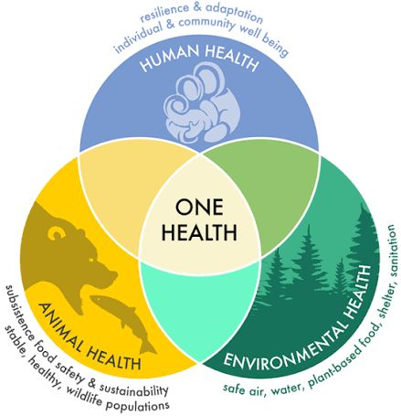

General Info
One Health: One World, One Connection
September 1, 2026

Think about the term, health. Perhaps you think of a healthy diet or the doctors office, all tied to human health. A few may think about a vets office, focusing on animal health, or even climate change imaging environmental health. But either way, each viewpoint is imagined as its own separate world. We often separate the term health into these three categories. But at its core, the idea of health is most truly embodied by the term One Health. One Health is the idea that the health of people, animals, plants, and the environment are deeply connected, and that protecting one often means protecting the others. As our world becomes increasingly connected through agriculture, travel, urbanization, and changing environments, understanding these relationships has become even more important.
Animals play a significant role in this delicate, global balance. The World Health Organization reports that more than 60% of emerging infectious diseases reported globally originate in animals, both wild and domestic. Beyond this, animal health can influence food safety, food security, antimicrobial resistance, biodiversity, livelihoods, and even the health of entire ecosystems. Hence, the field of animal science becomes critical: studying animal health, nutrition, genetics, behaviour, diseases, and production can teach us far more than how to simply care for animals alone. A healthier livestock population can contribute to a safer and more reliable food system, while monitoring wildlife health can sometimes reveal environmental or infectious threats before those same threats seriously affect people.
What excites me most about One Health is that it shifts the question from “How do we solve this problem?” to “How is this problem connected to everything around it?” Improving health often requires collaboration across hospitals, veterinary clinics, laboratories, farms, and environmental fields. Challenges such as zoonotic disease, antimicrobial resistance, climate change, food security, and habitat disruption do not fit within traditional scientific boundaries. One Health bridges these perspectives together to create solutions that are preventative rather than reactive. Ultimately, it reminds us that when the health of our world is interconnected, our solutions should be too.
References
- Centers for Disease Control and Prevention (CDC). About One Health.
- World Health Organization (WHO). One Health.
- U.S. Department of Agriculture, Animal and Plant Health Inspection Service (USDA APHIS). One Health.
- World Organisation for Animal Health (WOAH). One Health.